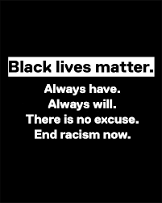
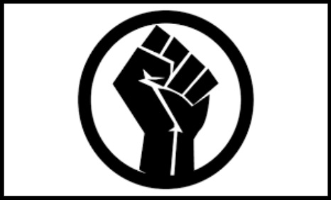
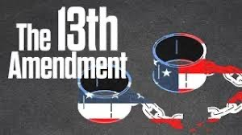

How can the Black Lives Matter Movement help abolish racism around the world?
What is black history? When did the discrimination start? Why are black citizens being discriminated against by whites?
What are some examples of peoples that have got killed at the hands of white policemen?
What is going on in the world to eliminate racism? What can people do to take steps to eliminate racism?


History
13th Amedment: From Slave to Criminal with One Amendment

This box is a example of the American society during 1600-continued.
See how the black box stands out while the white blends in with the background? This demonstartes how black people were different & stood out. They were treated like a whole new species, somtimes like a ghost, an animal, whatever you name it!
"Free at Last"This story will help understand what it feels like living as a black member and other challenges